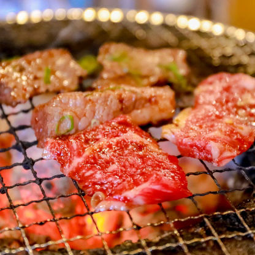

サンプル店舗1
ご案内

神戸牛最上肉を使った石焼ステーキや、カナダ産オマール海老の料理を気軽に楽しんでいただける、落ち着いた雰囲気のお店です。店内は、和の要素を洋風にアレンジした、若い方からご年配のお客様まで親しみやすいインテリアになっています。
店舗詳細情報
| TEL | 0564-XX-XXXX |
|---|---|
| 住所 | 愛知県岡崎市十王町２丁目９ |
| 営業時間 | 11:30〜14:00/17:00〜22:00 |
| 定休日 | 火曜定休 |
| 駐車場 | 30台 |
| 予算 | 950円〜 |
| 最大人数 | 30人 |
| 評価 |
|---|
|
味 ｜★★★★ 量 ｜★★★★ お値段｜★★★ 雰囲気｜★★★ 客入り｜★★★★ |
| メニュー |
|---|
|
季節の和洋懐石(全11品) 3,675円 季節の和洋懐石 3,675円 牛肉の八丁味噌シチュー 997円 八丁味噌ちゃんこ鍋 2,835円 |